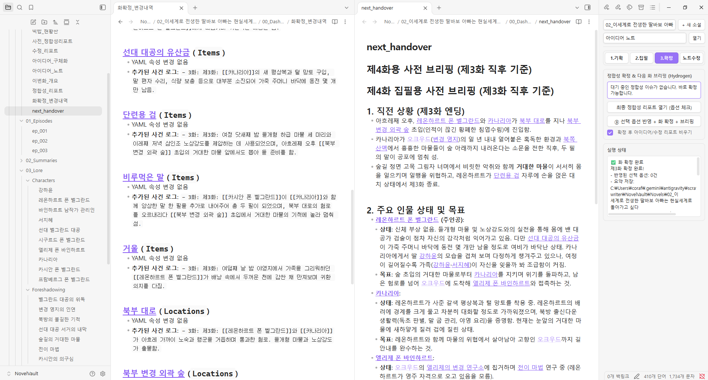

요즘 쓰는 메모 프로그램(옵시디언)에 AI 에이전트 터미널(안티그래비티) 연동해서 전용 소설 집필 플러그인 하나 직접 깎아봄.
그냥 LLM에 "소설 써줘" 하는 수준은 몇화만 지나도 설정 다 까먹고 정합성, 퀄리티 개박살나서, 아예 기획 → 집필 → 설정 검수 → 다음 화 인수인계까지 사이드바 버튼 하나로 굴러가게 파이프라인을 짰음.
핵심 기능 요약:
-
기획부터 위키 자동 생성까지 (1탭)
- 아이디어 노트에 뻘글처럼 설정 대충 적어두고 버튼 누르면 알아서 구체화 → 화별 개요 → 세계관/인물 위키 파일까지 자동으로 파줌.
- 본문 쓰기 전에 사전 정합성 체크로 설정 충돌 먼저 걸러냄.
-
모델 이원화 집필 + 위키 자동 동기화 (2탭)
- 기획·요약·검수는 빠른 모델로 돌리고, 본문 집필이나 힘줘야 하는 수정에만 고성능 모델 쓰게 옵션 분리함.
- 수정 리포트 적어서 고치면 바뀐 내용에 맞춰 설정집(위키)까지 자동으로 같이 업데이트됨.
-
설정 오류 체크박스 해결 & 다음 화 브리핑 (3탭)
- 다 쓰고 나면 AI가 설정 모순 잡아내서 해결 옵션을 체크박스로 여러 개 제시해 줌.
- 내가 맘에 드는 해결책에만 체크하고 확정 누르면, 본문 반영 + 화 확정 + 다음 화 집필용 브리핑 노트까지 자동으로 뽑아둠.
-
드래그 구간 핀포인트 수정 (4탭)
- 본문이든 캐릭터 설정이든 마음에 안 드는 문단만 마우스로 슥 드래그해서 "말투 좀 더 시니컬하게" 같은 지시 넣으면 그 부분만 깔끔하게 고쳐줌.
-
다작 지원
- 버튼 하나로 새 소설 프로젝트 파면 작품마다 문체 가이드·설정집·원고 폴더가 완전히 격리돼서 여러 작품 동시에 굴릴 수 있음.

예전처럼 AI랑 복붙하면서 "아까 그 캐릭터 죽었잖아 시발아" 하고 싸울 일이 없어져서 꽤 만족 중임.
완전 자동은 아니라서 써놓고 수정 여러번 돌려야되고, 수기로 마음에 안드는 장면은 수정해주고 있기는 한데, 그건 AI도 남이라서 글이 마음에 안드니까 어쩔 수 없는 것 같고.
아무튼 기본적인 뼈대 자체는 이제 딸깍으로도 충분히 세울 수 있음.
1화분량 아이디어 + 제작 + 수정까지 1시간에 6000자 정도 제작 가능한데 토큰은 집필에만 프론티어 모델쓰니까 거의 무료나 다름없이 뽑을 수 있음.
이제 상상력만 받쳐주면 웹소설 공장장 가능할 듯 ㅋㅋ
특슬람들이 드디어 소설을 정복했다거나, 쓰레드 영포티들이 강의팔이 하려고 올리는 레파토리 복붙 수준인데 ㅋㅋ